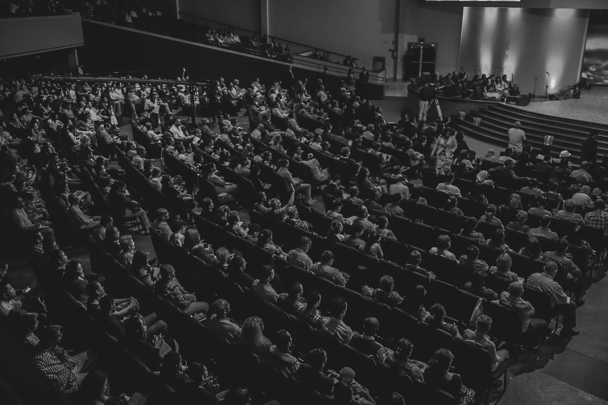

¿Quiénes somos?
En el Teatro Galleguista, nuestra pasión por las artes escénicas se fusiona con el espíritu vibrante y acogedor de la cultura gallega. Situado en el bullicioso escenario de la capital española, nos enorgullece ofrecer una experiencia teatral única que celebra la rica tradición teatral de Galicia.
Nuestra historia se remonta a décadas atrás, cuando un grupo apasionado de artistas gallegos decidió establecer un espacio donde la diversidad de las expresiones artísticas pudiera florecer. Desde entonces, el Teatro Galleguista se ha convertido en un faro cultural, iluminando la escena teatral de Madrid con producciones que cautivan, inspiran y desafían.
En el corazón de nuestra filosofía está el compromiso con la autenticidad y la creatividad. Creemos en dar voz a las historias que de otra manera podrían pasar desapercibidas, explorando narrativas que reflejan la complejidad y diversidad de la experiencia humana. Nuestro elenco y equipo creativo, compuesto por artistas talentosos y apasionados, trabajan incansablemente para ofrecer actuaciones que resuenen con el público y dejen una impresión duradera.
Además de nuestras producciones teatrales, el Teatro Galleguista es un espacio para la comunidad. Colaboramos con artistas locales, organizamos talleres educativos y eventos culturales, creando un ambiente donde la conexión y la expresión artística florecen. Nos enorgullece ser un punto de encuentro para amantes del teatro, tanto veteranos como nuevos espectadores, y estamos comprometidos con construir puentes entre culturas a través de la magia del escenario.
Únete a nosotros en el Teatro Galleguista, donde la pasión se encuentra con la tradición y cada actuación es una experiencia inolvidable. ¡Esperamos verte entre el público mientras continuamos escribiendo juntos la historia del teatro en Madrid!